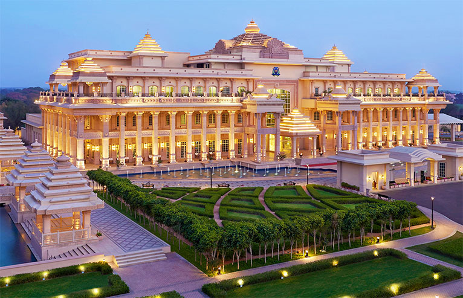
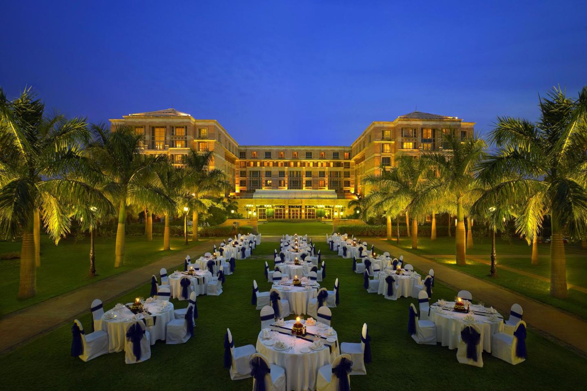

ITC MARATHA, MUMBAI
A luxurious business hotel built to capture the essence of Mumbai’s rich history; ITC Maratha’s most prominent architectural features express a confluence of European and Indian sensibilities. ITC Maratha features interiors that express a fusion of the old with the contemporary, efficiency with luxury and the soft richness of Maharashtrian art and furnishings, with an elegant European sensibility. ITC Maratha offers you a comfortable and inviting place to relax and relish yourself under the grandeur of Maratha dynasty's alchemy.
In an ambience steeped in history, complemented by a richness of culture acquired through centuries, ITC Maratha, a luxury hotel in Mumbai brings you world class luxury with the warmth of Indian hospitality in an experience that is unmistakably majestic. Inspired by the Maratha dynasty, this luxury hotel presents a range of cuisines, accommodation and recreation options that are comparable with the best in Mumbai, and the world.
A short distance away from the airport, this majestic luxury hotel reaffirms the understated grandeur and ethos of Maharashtrian hospitality. A luxurious business hotel built to capture the essence of Mumbai’s rich history; ITC Maratha’s most prominent architectural features express a confluence of European and Indian sensibilities. The distinctive domed roof that dominates its façade is perhaps its most recognisable feature of the Hotel.
ITC Hotels straddles 4 distinct brands in its portfolio to fulfill the service and budgetary needs of travelers. It has a long standing tie-up with top of the line premium brand, 'The Luxury Collection' for eleven of its hotels as also with the “Sheraton” brand for 1 of its hotels.

